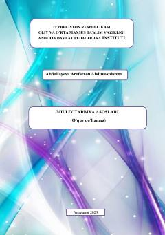

MTMilliy tarbiyaning nazariy asoslari va uni ta'lim jarayonida qo'llash bo'yicha o'quv qo'llanma.
Ushbu o'quv qo'llanma pedagogika yo'nalishidagi talabalar uchun mo'ljallangan bo'lib, milliy tarbiyaning nazariy va amaliy asoslarini yoritadi. Unda yosh avlodni milliy qadriyatlar va an'analar ruhida tarbiyalashning zamonaviy pedagogik mexanizmlari hamda ta'lim muassasalari va mahalla hamkorligi masalalari tahlil qilingan.